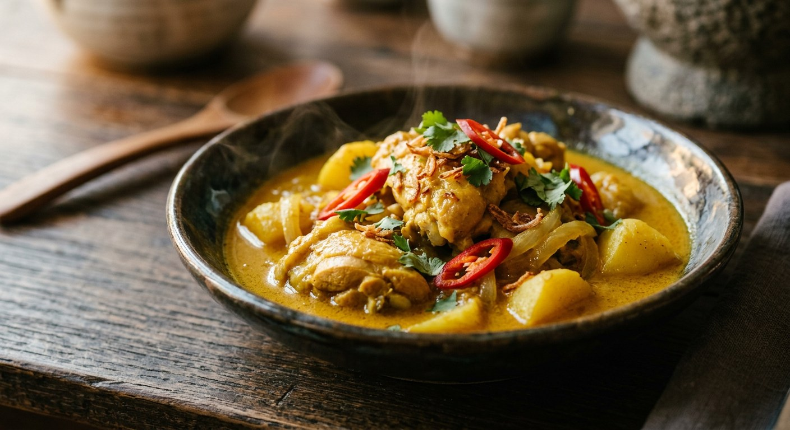

Curry paste fried in coconut cream until the oil splits, chicken and potatoes braised in coconut milk, a spoon of ajad on the side — massaman's younger sibling, and the Thai curry that smells of India.

Krua.co's definition is the cleanest one in Thai: แกงกะหรี่คล้ายกับแกงมัสมั่น — kaeng kari is like massaman, except the paste skips the clove, cardamom, nutmeg and cinnamon and takes curry powder and ginger instead. Phol Food Mafia's chef calls it a central-Thai curry with the flavour of Indian food culture, noting the meat was once beef and became chicken to suit local taste. It is a curry for big pieces — chicken, fat river prawns, tuna, pork belly — braised in coconut milk over potato, yellow-red and glossy on top, salty first and only a little sweet.
It is also, both Bloggang cooks note, a dish fading from view. Two separate home cooks begin their posts the same way: everyone queues for Japanese curry now, but nobody talks about the Thai one — the curry their mothers sent them out to buy as children, chicken and potato in a thick yellow-red sauce, never very spicy, and always eaten with ajad. The vinegar-cucumber relish is not optional decoration; it is the counterweight that cuts the coconut richness, the same job it does beside satay.
And where massaman and kaeng kari meet, monnira's post is the careful witness: the method is the same — fry the paste in oil or coconut cream, add the meat, the potatoes, the coconut milk, and simmer — but the spices diverge, and that is where the two curries part ways.
| Thai | English | Amount |
|---|---|---|
| พริกแกงกะหรี่ | Thai kaeng kari curry paste | 50 g (~2 tbsp) |
| หัวกะทิ | Coconut cream | 200 ml |
| หางกะทิ | Coconut milk | 400 ml |
| สะโพกไก่ | Chicken thigh, cut chunky | 400 g |
| มันฝรั่ง | Potatoes, cut bite-size | 100 g |
| หอมแดง | Shallots, peeled whole | 5 |
| ใบกระวาน | Bay leaves | 2 |
| น้ำปลา | Fish sauce | 2 tbsp |
| น้ำตาลปี๊บ | Palm sugar | 1–2 tbsp |
| อาจาด | Cucumber ajad, to serve | as needed |
The homemade-paste pot (Krua.co): pound soaked dried chillies with sea salt, then kaffir lime skin, galangal, ginger and lemongrass; then shallots, garlic and grilled shrimp paste; last the roasted coriander seed, roasted cumin and curry powder — and cook it with browned chicken thigh, potato and onion in coconut cream and water. The curry-powder pot (ครัวบ้านพิม): no paste at all — chicken and potato simmered in coconut milk, a spoon of good curry powder fried separately in ladled coconut cream until fragrant, returned to the pot with sugar, fish sauce, spring onion and chillies. The watery pot (Bloggang baanbaitong): mother's Thai style with lots of thin sauce — one chicken thigh, a packet of ready-made paste, one small pot of coconut milk, potato or sweet potato, optional small tomatoes, with ajad from ⅔ cup vinegar, 5 tbsp sugar, 2 tsp salt, cucumber, shallots and chillies.
The paste. Krua.co pounds a full paste — dried chillies, kaffir lime skin, galangal, ginger, lemongrass, shallots, garlic, grilled shrimp paste, roasted coriander and cumin, curry powder. Phol's chef and baanbaitong use ready-made kaeng kari paste — monnira buys hers loose at Chatuchak market by the hundred grams. ครัวบ้านพิม skips the paste entirely and cooks with curry powder alone. All five still call the dish แกงกะหรี่.
How sweet. Phol Food Mafia seasons with a hefty 50 g of palm sugar. Krua.co uses two teaspoons of coconut sugar and wants the curry salty-leading; monnira remembers hers as salty with only a little sweetness; ครัวบ้านพิม uses ¾ teaspoon. The Thai curry is a savoury dish with a sweet note — how loud the note plays is the cook's business.
The chicken. Krua.co browns the chicken in oil before the paste goes in. Phol's chef fries it in the curry paste itself. ครัวบ้านพิม never fries it at all — chicken and potato go straight into boiling coconut milk. monnira adds the reconciliation: for thigh or drumstick you can skip the frying altogether and let the pot do the work.
Onions. Krua.co quarters big onions into the pot; Phol's chef uses whole shallots; ครัวบ้านพิม and baanbaitong use none, spring onions and chillies scattered on at the end instead. Onion or shallot, the point is the same — something sweet and soft braising beside the potato.
The potatoes, and everything else. Everybody agrees on potato — except baanbaitong, who allows sweet potato instead, and adds small tomatoes as an optional extra. The bay leaf is Phol's chef's alone; the other four make the curry without it. And where Phol's chef serves the thick braise, baanbaitong's mother made it watery (น้ำเยอะ ๆ), thin enough to flood a plate of rice.
This recipe is translated from the following Thai-language sources. Where they disagree, we've said so.
1. Phol Food Mafia — "Chicken Curry (แกงกะหรี่ไก่)" by Chef Thanakorn Ployseechomphu (the recipe used here) — pholfoodmafia.com
2. Krua.co — "แกงกะหรี่ไก่" (the massaman comparison and the homemade-paste recipe) — krua.co
3. Bloggang — "แกงกะหรี่ (ไก่)" by monnira (the childhood curry, the Chatuchak paste, the massaman-vs-kari reckoning) — bloggang.com
4. Bloggang — "44. แกงกระหรี่ไก่+อาจาด...แบบไทย ๆ" by baanbaitong (the watery Thai style and the ajad recipe) — bloggang.com
5. ครัวบ้านพิม — "กะหรี่ไก่กับมันฝรั่ง" (the curry-powder pot, chicken and potato simmered in coconut milk) — pim.in.th